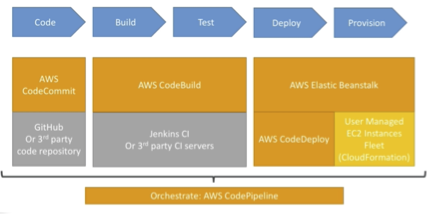
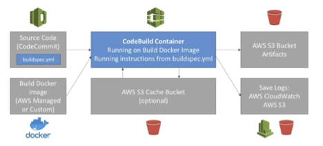

CICD¶
CodeCommit¶
Private Git repositories
No size limit for repositories
Fully managed and highly available
Code only resides in the AWS account – increases security and compliance
Security – encryption, access control etc
Integrated with Jenkins / CodeBuild / other CI tools
- CodeCommit Security
Interactions are done using Git (standard)
Authentication in Git * SSH Keys: AWS users can configure SSH keys in their IAM console * HTTPS: Done through the AWS CLI Authentication helper or generating HTTPS credentials * MFA
Authorization in Git * IAM policies manage user / roles rights to repositories
Encryption * Repositories are automatically encrypted at rest using KMS * Encrypted in transit (Can only use HTTPS or SSH)
Cross account access: * Use IAM role in your AWS account and use AWS STS (with assumeRole API)
CodeCommit vs GitHub
- Similarities
Both are git repositories
Both support code review (pull requests)
GitHub and CodeCommit can be integrated with AWS CodeBuild
Both support HTTPS and SSH method of authentication
- Differences
Security
GitHub: Github users
CodeCommit: AWS IAM users and roles
Hosted
Github: hosted by GitHub
Github enterprise: self hosted on your servers
CodeCommit: managed and hosted on AWS
UI
Github UI is fully featured
CodeCommit UI is minimal
- CodeCommit Notifications
You can trigger notifications in CodeCommit using AWS SNS / Lambda or CloudWatch Event Rules
Use cases for notifications SNS / lambda notifications
Deletion of branches
Trigger for pushes that happens in the master branch
Notify external Build System
Trigger AWS Lambda function to perform codebase analysis (maybe credentials got committed in the code?!)
Use cases for CloudWatch Event Rules
Trigger for pull request updates (created / updated / deleted / commented)
Commit comment events
CloudWatch Event Rules goes into a SNS topic
CodePipeline¶
A visual tool to perform continuous Delivery
Source: Github / Amazon S3 / CodeCommit
Build: CodeBuild / Jenkins etc.
Load Testing: 3rd Party tools
Deploy: CodeDeploy / Beanstalk / CloudFormation / ECS etc.
Pipelines are made of stages * Each stage can have sequential actions and / or parallel actions * Stages: Build / Test / Deploy / etc. * Manual approval can be done at any stage
- Pipeline Artifacts
Each pipeline stage can create “artifacts”
For each stage we can add one or more “action groups”
Each action group can have series of “actions”
Artifacts are stored in S3 and passed on to the next stage
- Troubleshooting
CodePipeline state changes happen in AWS CloudWatch Events, which can in turn create SNS notifications * E.g., you can create events for failed pipelines * You can create events for cancelled stages
If a CodePipeline stage fails, your pipeline stops and you can get the information in the console
AWS CloudTrail can be used to audit AWS API calls
If Pipeline can’t perform an action, make sure the “IAM Service Role” attached does have enough permissions (IAM Policy)
CodeBuild¶
It is a fully managed build service
Alternative to other build tools such as Jenkins
Continuous scaling (no servers to manage or provision – no build queue)
Pay for usage: the time it takes to complete the builds
Leverages docker under the hood for reproducible builds
Possibility to extend the capabilities leveraging our own docker images
Secure: Integration with KMS for encryption for build artifacts, IAM for build permissions, and VPC for network security, CloudTrail for API calls logging
Source code can be from Github / CodeCommit / CodePipeline / S3
Build instructions can be defined in the code (buildspec.yml file)
Output logs to Amazon S3 and AWS CloudWatch logs
Metrics to monitor CodeBuild statistics
Can use CloudWatch alarms to detect failed builds and trigger notifications
Can use CloudWatch Events and AWS lambda as a glue
Can trigger SNS notifications
Ability to reproduce CodeBuild locally to troubleshoot in case of errors
Builds can be defined within CodePipeline or CodeBuild itself
- Code Build Support Environments
Java / Ruby / Python / Go / Node.js / Android / .NET Core / PHP
Docker: extend any environment you like
How CodeBuild works?
Buildspec.yml should be at the root of the codebase
You don’t really need docker for CodeBuild
- BuildSpec.yml
Buildspec.yml must be at the root of the repository
We can define environments variables like
Plaintext variable
Secure secrets: use SSM parameters store (don’t store secrets in the code)
Phases
Install: For installing dependencies for the build
Pre-build: Final commands to execute before the build
Build: The actual build commands
Post Build: Finishing touches (creating zip file output for example)
Artifacts: These are the artifacts we finally upload to S3 * They are encrypted using KMS
Cache: Files to cache (usually dependencies) to S3 for future builds speedup
- Local Build
Used in cases where there is a need to deep troubleshoot beyond logs
You can run CodeBuild locally on your desktop (after installing Docker)
For building locally, CodeBuild Agent is required
- CodeBuild in the VPC
By default, your CodeBuild containers are launched outside your VPC
Therefore, by default it cannot access resources inside a VPC
To overcome it, you can specify a VPC configuration * VPC ID * Subnet IDs * Security Group IDs
This VPC configuration will enable access to your VPC resources namely RDS, ElastiCache, EC2, ALB etc
Use Cases: Integration tests may require access to a DB to query data, internal load balancers
You can also launch a CodeBuild in a private subnet with an NAY Gateway enabled
CodeDeploy¶
This is a managed service
Appspec.yml file should be at the root of the github repository
Used in cases where we want to deploy our application automatically to many EC2 instances, where these instances are not managed by Elastic Beanstalk
There are several ways to handle deployments using open source tools like * Ansible * Terraform * Chef * Puppet etc.
Steps to make it work #. Each EC2 instance or an on premise machine should run a CodeDeploy Agent #. The agent continuously polls the AWS CodeDeploy for work to do #. CodeDeploy sends appspec.yml file to the EC2 instance #. The application will pull the source code from Github or S3 #. EC2 instances will run the deployment instructions #. CodeDeploy agent will report success or failure of deployment on the EC2 instance
- CodeDeploy – Other
EC2 instances are group by deployment group (dev / test / prod)
Lots of flexibility to define any kind of deployments
CodeDeploy can be chained into CodePipeline and use artifacts from there to deploy
CodeDeploy can re-use existing setup tools, works with any application,
CodeDeploy has an autoscaling integration
Note: Blue / Green deployment only works with EC2 instances (not on premise)
Support for AWS Lambda deployments
CodeDeploy does not provision resources – it assumes the EC2 instances are already existing
- CodeDeploy Primary Components
Application: unique name
Compute Platform: EC2 / On-premise or Lambda
Deployment Configuration: Deployment rules for success or failure status
EC2 / On-premise * You can specify the minimum number of healthy instances for the deployment
AWS Lambda * Specify how the traffic is routed to your updated Lambda function versions
Deployment Group * Group of tagged instances (allows to deploy gradually)
Deployment Type * In place or Blur / Green deployment
IAM instance profile * Need to give EC2 the permissions to pull from Github / S3
Application Revision * Application code + appspec.yml file
Service Role: * Role for CodeDeploy to perform what it needs
Target Version * Target deployment application version
- Appspec.yml
- File section
How to source and copy from S3 / Github to file system
- Hooks
A set of instructions to deploy the new version (hooks can have timeouts).
- The order of hooks is
ApplicationStop
DownloadBundle
BeforeInstall
AfterInstall
ApplicationStart
ValidateService: really important
Note: not all these steps needs to be specified. But they are in the order specified
Other CodeDeploy hooks run after ValidateService * BeforeAllowTraffic * AllowTraffic * AfterAllowTraffic
Deployment Configs
- Config
One at a time
One instance at a time, one instance fails -> deployment stops
Half at a time: 50%
- All at once
This setting is quick but if there are no no healthy hosts, then there will be some downtime
Good for dev
Custom * Minimum healthy host = 75%
- In case of failures
Instances stay in the failed state
New deployments will be first deployed to failed state instances
- To rollback
Redeploy old deployment or
Enable automated rollback for failures
Deployment Targets * It is a set of EC2 instances with tags or an ASG * Mix of ASG / Tags so you can build deployment segments * Customization in scripts with DEPLOYMENT_GROUP_NAME environment variables. For instance, this can be used for doing different actions in development and production
To create a CodeDeploy
- Create to IAM roles
Assign a service role (Code Deploy Role) – AWSCodeDeployRole
- EC2 service role
Needed for the CodeDeploy agent running on the EC2
Role to choose – AmazonS3ReadOnlyAccess
This EC2InstanceRoleForCodeDeploy (user’s name of a role) should be assigned as an IAM role in the EC2 instance
- CodeDeploy to EC2
Define how to deploy the application using appspec.yml file + deployment strategy
Will do in-place update to your fleet of EC2 instances
Can use hooks to verify the deployment after each deployment phase
- CodeDeploy to ASG
In place updates * Updates current existing EC2 instances * Instances newly created by an ASG will also get automated deployments
Blue / Green Deployment * A new auto-scaling group is created (settings are copied) * Choose how long to keep the old instances * Must be using an ELB
- CodeDeploy – Rollbacks
Different automated rollback options * Rollback when a deployment fails * Rollback when alarm thresholds are met * Disable rollbacks – Do not perform rollback for this deployment
If a rollback happens, CodeDeploy redeploys the last known good revision as a new deployment
CodeStar Overview¶
CodeStar is an integrated solution thar re-groups: Github, CodeCommit, CodeBuild, CodeDeploy, CloudFormation, CodePipeline, CloudWatch
Helps create “CICD ready” projects for EC2, Lambda, Beanstalk
Supports many lagit lognguages * C#, Go, HTML 5, Java, Node.js, PHP, Python, Ruby
Issue tracking integration with: Jira / Github Issues
Ability to integrate with Cloud9 to obtain a web IDE (not supported in all regions)
One dashboard to view all the components (CodeCommit / CodeDeploy etc)
It’s a free service, pay only for the underlying usage of other services
Limited customization